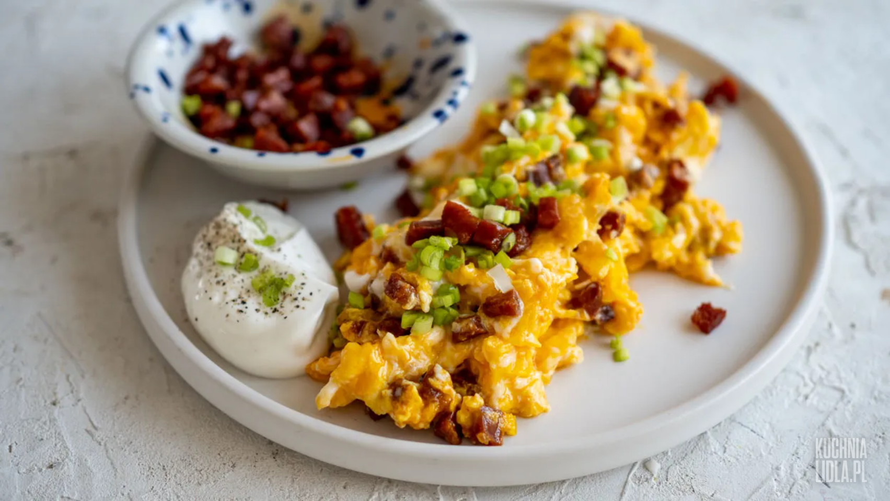

Tkaczyk News
SERWIS INFORMACYJNY
Przepis na niesamowitą jajecznicę z chorizo
SKŁADNIKI: jajko - 4 szt., chorizo - 50 g, cebula dymka - 2 łyżki, sól - 1 szczypta, pieprz czarny - 1 szczypta, śmietana kwaśna - 2 łyżki
PRZYGOTOWANIE: Jajka wbijamy do miski i bełtamy. Chorizo kroimy w kostkę, a dymkę drobno siekamy. Chorizo smażymy na suchej patelni na średnim ogniu, aż wytopi się tłuszcz, a kiełbasa będzie zarumieniona i chrupiąca. Gotową kiełbasę przesuwamy na bok patelni. Na patelnię, obok chorizo, wlewamy jajka i podsmażamy je przez moment. Następnie mieszamy je z kiełbasą, doprawiamy do smaku solą i pieprzem i smażymy jeszcze chwilę, aby jajka się ścięły, jednak nie stały się suche. Tak przygotowaną jajecznicę zdejmujemy z ognia, mieszamy z posiekaną dymką i podajemy z kwaśną śmietaną.